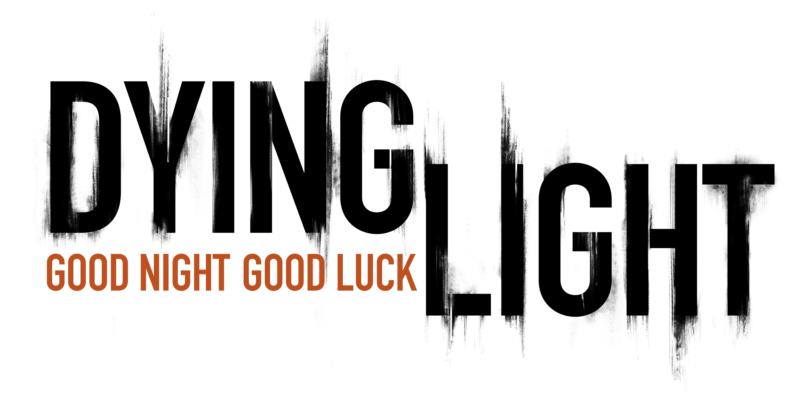

TRANSMISSÃO DE EMERGÊNCIA — QUARENTENA ATIVA · HARRAN
DYING
LIGHT
Parkour · Infecção · Sobrevivência Noturna — Guia de Platina PT-BR
// Dificuldade da Platina
1
5/10 — MODERADO (Grind + Cooperativo)
10
A dificuldade não vem de combate difícil, e sim de VOLUME (69 troféus, muitos cumulativos) e da necessidade de parceiros cooperativos reais para 5 troféus. Nenhum inimigo é realmente perigoso fora de perseguições noturnas.
// Avisos Críticos
// Quase Nada é Perdível
Dos 69 troféus, apenas 1 é genuinamente perdível (a corrida do Bilal na DLC The Following). Todo o resto — missões secundárias, colecionáveis, Zonas de Quarentena, Safe Zones — pode ser feito em free-roam a qualquer momento, inclusive após terminar a história principal.
O jogo permite fast travel entre Favelas e Cidade Velha após a campanha, e entre o mapa base e a DLC The Following pelo menu principal a qualquer momento.
O jogo permite fast travel entre Favelas e Cidade Velha após a campanha, e entre o mapa base e a DLC The Following pelo menu principal a qualquer momento.
// Fontes de Referência
> Exophase PS4 Troféus PT-BR: exophase.com/game/dying-light-ps4/trophies/pt-BR/
> PSNProfiles — Lista Completa: psnprofiles.com/trophies/3303-dying-light
> TrueTrophies — Lista Completa: truetrophies.com/game/Dying-Light/trophies
> PowerPyx — Guia de Colecionáveis: powerpyx.com/guides/dying_light.html
⏱ Tempo para terminar a história
~18 h
Campanha base, só a história
36–40 h
História + missões secundárias
~10 h
The Following, só a história
60–64 h
Jogo base 100%
São 15 missões principais no jogo base e 11 na DLC The Following. A missão mais longa é "Pact with Rais", que pode passar de 1 hora. A PlayStationTrophies estima cerca de 10 h só para a história principal, e quem corre direto só pelas missões principais relata menos de 10 h na Steam; outro jogador levou cerca de 45 h no Nightmare com 95% das secundárias. O tempo depende da dificuldade e de quanto você sobe de nível antes.
Fontes: WePC ("How Long is Dying Light?": ~18 h, ~40 h, ~60 h; DLC ~10 h + ~5 h) · HowLongToBeat via Insider Gaming (36 h história + secundárias; 64 h completo) · Steam Community (relatos de jogadores) · PlayStationTrophies.org (história ~10 h) · Prima Games (duração das missões). Os números divergem entre as fontes: use como faixa, não como valor exato.
// Caminho da História
> Missões na ordem em que você as faz, com o que acontece, o que preparar e quais troféus saem em cada uma. Toque numa missão para abrir. Há spoilers leves de enredo.
// Checklist de Troféus por Fase
// Progresso do Checklist
0/69 TROFÉUS
> As fases seguem a ordem natural da campanha + DLCs. Clique nos troféus para marcar como concluído. Itens com ⚠️ merecem atenção — veja a aba "Perdíveis" para detalhes completos.
// Perdíveis, Bugs Conhecidos e Cooperativo
Dying Light é um jogo de 2015 com histórico extenso de patches — alguns troféus têm bugs de contagem DOCUMENTADOS há anos. Nenhum deles impede a platina, mas todos têm solução conhecida abaixo.
Como ler: os cards estão em ordem cronológica, do que você pode perder primeiro (início do jogo) até o fim. Segundo as fontes consultadas, só 1 troféu é marcado como perdível; os demais são janelas curtas, bugs ou dependem de parceiro. Onde as fontes divergem ou eu não consegui confirmar, o card avisa.
// Checklist de Prevenção — Confira Antes de Prosseguir
🎯 Panorama da platina
O platina de Dying Light é mais longo do que difícil: a PlayStationTrophies dá dificuldade 4/10 e 36 a 50 horas, com 1 jogatina e nenhum troféu perdível no jogo base. O que consome tempo são os contadores (escalada, quedas de telhados, 500 mortes com o buggy) e os troféus online.
A regra que atravessa todo o jogo: à noite, todos os pontos de habilidade valem em dobro, e dormir em qualquer Safe Zone troca o horário na hora. Quase todo grind bom é feito à noite, perto de uma Safe Zone, com os contadores cumulativos (morrer não os zera).
Fontes: PlayStationTrophies.org (roadmap) · Dying Light Wiki (dicas de carregamento) · PowerPyx.
// Regras de Ouro
// Ordem de Progressão Recomendada
// Mecânicas Que Valem Troféu
// Grind por Troféu — Toque Para Abrir
// Equipamento Que Acelera Tudo
// The Following: Buggy, Motorista e Nível
// Onde as Fontes Divergem
// Mapa Interativo
▲
▼
100%
Mapa renderizado com MapTiler Engine (uso não comercial).